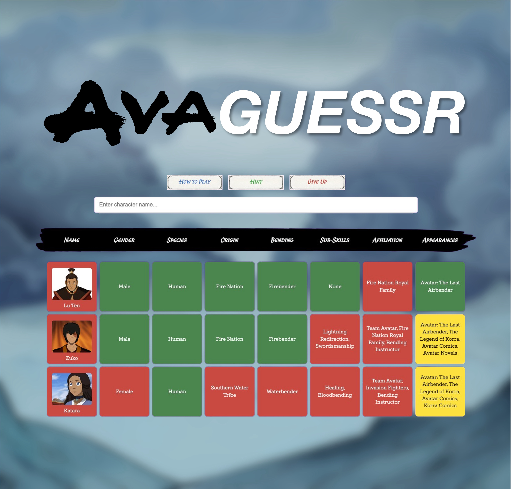

Originally from Arizona, I am an Information Systems student at BYU (STEM-certified, Grad Apr 2027) with experience in leadership, mentoring, and problem-solving, and a growing interest in international business and global collaboration. I’m also passionate about finding the hidden meaning behind the numbers. Like a less-cool Sherlock Holmes.
Provided research and technical support for students, faculty, and visitors at the reference desk. Strengthened problem-solving, communication, and customer service skills while promoting a welcoming learning environment.
Supervised and mentored groups of 10–20 youth during multi-day conferences, providing spiritual guidance, facilitating devotionals, and leading activities that built faith and community.
Led teams and coordinated digital media initiatives to support organizational outreach and training efforts across the country.
I built a Wordle-style web game using HTML, Javascript, Python, and CSS where players guess characters from Avatar: The Last Airbender (my favorite childhood show) by matching key attributes. I designed both the interface and back-end logic, which gave me hands-on experience in web development, database management, and integrating data systems.
Play
During my time as a Volunteer Representative, I led end-to-end video production for our mission’s social media channels. My partner and I handled all producing, filming, interviewing, and editing for this project in Iceland, one of several videos we created to share uplifting messages.